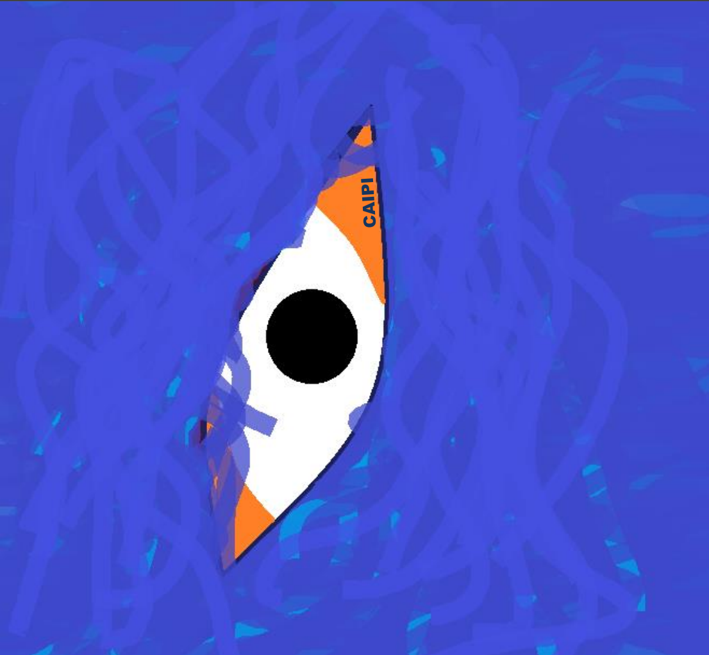

Galasport Caipi
Каяк Caipi від Galasport — це інноваційний човен для слалому, який пропонує значну маневреність та швидкість для професійних спортсменів. Його конструкція розроблена у співпраці з відомим французьким чемпіоном Борисом Неуве, з метою поліпшити функціональність оригінальної моделі Caipi Fins та досягти більшої стабільності та контролю. Caipi має інтегровані плавники для стабілізації на високих швидкостях і контрольованих поворотах. Його корпус забезпечує полегшене обертання, що дозволяє каякеру впевнено маневрувати в складних умовах на воді. Модель також відзначається зміщеним на 3 см назад положенням сидіння, що забезпечує оптимальний баланс та комфорт під час спуску. Доступна лише у версії Carbolight, яка є надлегкою та міцною, що додає стійкості у важких умовах на водних трасах. Цей каяк ідеально підходить для атлетів вагою від 65 до 85 кг і стає ідеальним вибором для тих, хто прагне швидких і точних маневрів.
